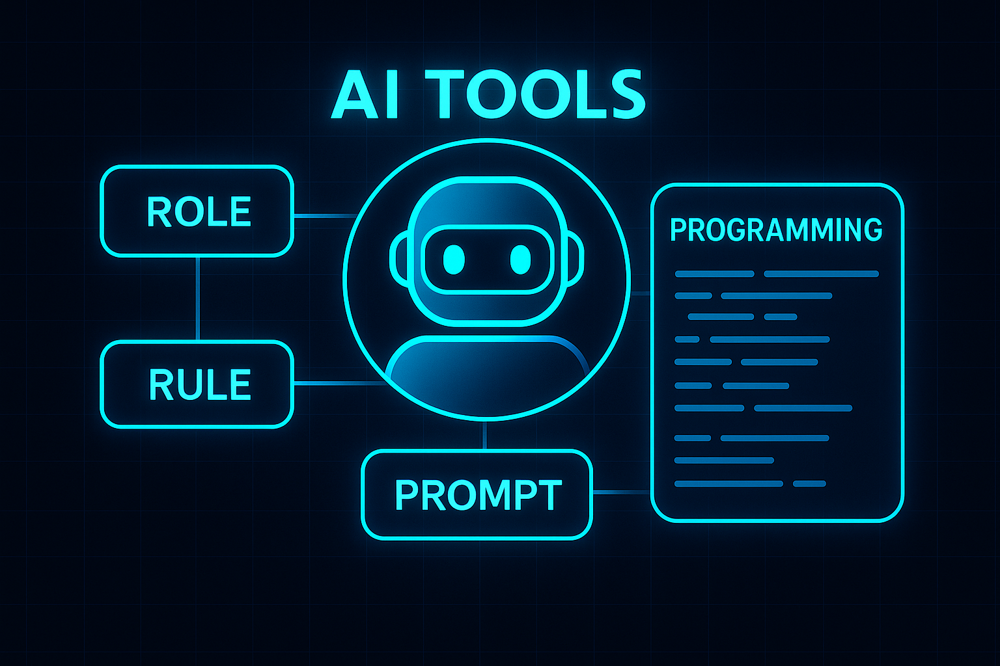

Takeaways from Learning Programming and AI Tools - Part 1

🧠 學習心得：程式設計與 AI 工具 | Learning Reflections: Programming and AI Tools
截至 2025 年年中，AI 工具的發展相較於 2024 年又呈現出全新的面貌。
這次有幸參加由台灣 五倍學院 舉辦的 AI 工具應用分享會，獲得許多寶貴的觀念與實戰經驗，讓我在這個 AI 快速演進的階段中，得以深入觀察與體驗不同工具的應用方式。
As of mid-2025, the development of AI tools has taken on a new look compared to 2024.
I had the opportunity to attend an AI tools application sharing session organized by 五倍學院 in Taiwan, and gained many valuable ideas and hands-on insights. In this rapidly evolving era of AI, this experience allowed me to better explore and try out various tool applications.
⚖️ 發展與限制並存 | Coexistence of Advancement and Limitations
程式開發的流程正在轉變: 從過去每一行程式碼都需由開發者親自撰寫，到如今，AI 成為得力的協作助手，顯著提升開發效率與產量。其中一位講者分享，他在與 AI 協作的情況下，一個月就能產出數萬行程式碼，這在以往幾乎是難以想像的效率。
The software development process is evolving - from the days when every line of code was written manually, to now where AI acts as a capable assistant, greatly improving speed and productivity. One speaker shared that, with the help of AI, they were able to generate tens of thousands of lines of code within a single month - something hardly imaginable in the past.
然而，AI 工具在應用過程中仍存在不少挑戰，例如：
程式碼缺乏目標，胡亂撰寫內容
大型語言模型（LLM）知識未更新到當下的時間點
容易忘記上下文對話
Token 數限制帶來上下文瓶頸
However, there are still several challenges when applying AI tools:
Code may lack direction and be generated randomly
LLMs are not trained with the most up-to-date data
The AI can easily forget previous conversations
Token limits can cause loss of context
🔧 解決 AI 工具限制的三個關鍵做法 | Three Key Strategies to Overcome AI Limitations
這場分享會提出了許多實用策略，我將其歸納為三個核心重點：
The session provided several practical strategies. I summarize them into three key actions:
1️⃣ 先理解任務，再拆解行動 | Understand the task, then break it down
使用 AI 撰寫程式前，應先釐清整體任務內容，撰寫 PRD（產品需求文件），再將任務切分成多個小目標，逐步交由 AI 執行。這不僅能提升成功率，也能更有系統地控管開發進度與品質。
Before asking AI to write code, clarify the overall goal and prepare a PRD (Product Requirements Document). Then break down the task into smaller sub-tasks, and let AI handle them step by step. This ensures both higher success rates and more manageable project progress.
2️⃣ 明確定義 Role、Rules 與 Prompt | Clearly define Role, Rules, and Promp
這部分是我個人收穫最大的區塊，建議開發者可從以下三點著手：
This was the most valuable part for me. Developers can start by defining the following:
角色：
定義 AI 模型在對話中的專業知識與語言習慣。例如：限定使用 JavaScript 撰寫，且專注於前端開發的相關邏輯，幫助 AI 更聚焦產出方向。Role:
Define the model’s expertise and response tone. For example, restrict output to JavaScript, focusing on frontend logic, so the AI stays on track.規則：
除了要明確定義專案的程式風格與架構，更要設定「不允許執行的行為」，例如：嘗試兩次失敗後應中止並回報人員; 嚴禁執行rm -rf等危險指令.這些規則可根據公司標準、團隊風格或個人開發習慣自行制定，也能參考以下資源調整：
Rules:
Besides coding style and project structure, define things AI should NOT do, such as: Stop and report after two failed attempts, Never run dangerous commands like
rm -rfThese rules can be based on company standards, team preferences, or personal habits. We can also refer to these resources for inspiration:
提示語：
重點不在「套用範本」，而是清楚表達需求。只要明確說出你要什麼、使用哪種語言、預期的輸出形式，AI 就能有效理解與執行。
Prompt:
The key is to clearly state your needs. No need to memorize templates and just explain what you want, which language to use, and what output you expect.
3️⃣ 對話內容過長時，善用摘要與上下文引用 | Manage long conversations with summaries and context reference
當與 AI 對話時間拉長，容易超出 token 限制。
建議將對話摘要紀錄為 .md 檔案，或使用 AI 工具的記憶功能（如 Cursor 的 @file 標記），在新對話中引用上下文，讓 AI 延續思路，提升整體協作品質。
When conversations get too long, you may hit token limits.
To manage this, summarize the key points into .md files or use memory features (like Cursor’s @file tag) to carry context across sessions.
This helps maintain continuity and improves AI collaboration quality.
🧰 工具選擇的多元與策略 | Choosing the Right Tools
這次分享會介紹了許多常見的 AI coding 工具，包括：
ChatGPT
GitHub Copilot
Cursor
Claude Code
Cline / RooCode
Gemini CLI
每個工具都有不同特色，選擇上應視個人工作流程與專案需求而定。
AI 工具發展變化快速，不需要追求「最好」，而是找到最適合你使用習慣的那一個。當然，是否收費也是需要納入考量的因素。
The session introduced many popular AI coding tools, including:
ChatGPT
GitHub Copilot
Cursor
Claude Code
Cline / RooCode
Gemini CLI
Each tool has its strengths. Choose based on your personal workflow and project needs.
Given how fast AI tools evolve, there’s no need to chase “the best”—just pick the one that fits you best. Also, remember to factor in cost differences.
🧪 實例啟發：定義讓 AI 發揮得更好 | Practical Insight: Help AI Help You
透過 Cursor 首席工程師 Ryo Lu 的經驗分享 (https://x.com/ryolu_/status/1914384195138511142)，更加深我對 Role 與 Rules 設定的重要性理解。他強調：「AI 是手，不是腦。你要教會它，才會成為神隊友。」
Through the experience shared by Cursor’s lead engineer Ryo Lu (https://x.com/ryolu_/status/1914384195138511142), I gained a deeper understanding of how defining Role and Rules can significantly improve AI output.
同時，反覆測試、優化 prompt、提升對程式的理解，仍是每位開發者的基本功。當 AI 無法給出正確答案時，仍需有能力親自下場撰寫，甚至反過來讓 AI 向你學習。
Repeated testing, prompt refinement, and improving your own coding understanding remain essential. When AI fails, developers still need to write code themselves—and even help AI learn from you.

📌 收穫 |Takeaways
1️⃣ 講者分享「AI 是 Copilot，我們是 Pilot」，我認為我們執行一項專案時，必須認知到 AI 始終僅是工具，我們必須清楚掌握專案的主軸，並適時給予調整與反覆確認正確性。
The speaker mentioned, “AI is the copilot, and we are the pilot.”
I believe that when working on a project, we must always remember that AI is just a tool. We, as humans, should stay in control - clearly understanding the goals, making adjustments as needed, and constantly verifying the correctness of outcomes.
2️⃣ 「AI 使我們寫程式的肌肉記憶消失」、「AI 讓人喪失思考能力」等負面研究結果的出現，提醒我們必須不斷思考如何持續在自己的專業領域成長，以及如何在必要時也有能力繼續編輯程式。
Research has raised concerns that AI may cause us to lose our “muscle memory” for coding and weaken our problem-solving abilities. This reminds us to keep improving in our fields, and ensure we can still code when needed.
我認為，偶爾需要停下操作協作工具，看看這些 AI 工具產出的流程與程式內容，自己是否能大部分掌握；甚至自己是否可以在不依賴工具的狀況下，產出一樣的結果。換句話說，讓自己維持一定的掌握度是很重要的。
Sometimes, it’s good to pause and review the AI’s output:
“Do I understand the logic? Could I write this myself without the tool?”
Maintaining a certain level of independence is essential.
3️⃣ AI 時代下，技術的更新十分快速，自己與這些工具之間各扮演的角色也不會一成不變。持續了解潮流的變化以及透過邏輯思考讓自己工作更有效率，是維持競爭力的重點之一。
In the age of AI, technologies are evolving rapidly, and our roles in relation to these tools are also shifting. Staying up-to-date with trends and using logical thinking to work more efficiently is one of the keys to staying competitive.
4️⃣ 繼續探索有價值的領域知識。AI 幫我們省去許多撰寫程式的時間，我們可以利用這些時間去探索專業領域的細節。這將讓我們提出更明確且更創新的想法，進而讓 AI 工具幫助我們創造出更有價值的成果。
We should use the time saved by AI coding to explore deeper domain knowledge. With better understanding, we can ask smarter questions and give clearer instructions - enabling AI to help us create results that are more valuable and more innovative.